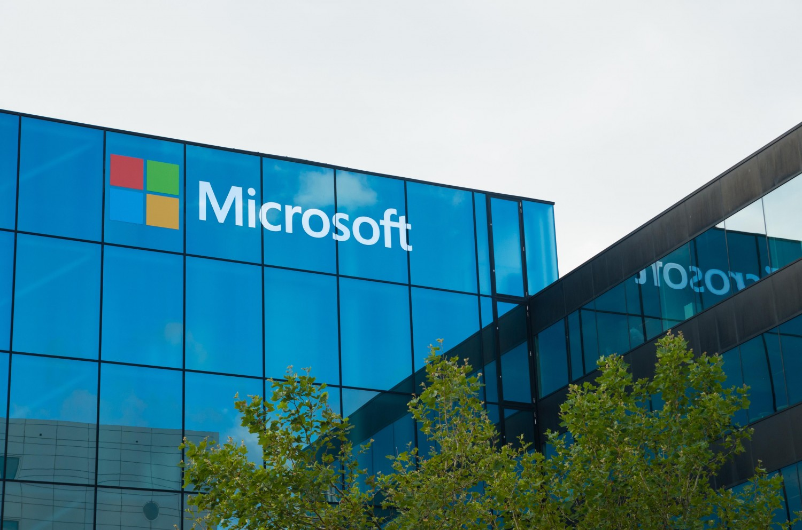

Корпорація Майкрософт (Microsoft Corporation) (читається майкрософт корпорейшн) — багатонаціональна корпорація комп'ютерних технологій зі 124 тис. працівниками в 102 країнах (2017р.)
є найбільшою у світі компанією — виробником програмного забезпечення. Головний офіс розташований в корпоративному кампусі в Редмонді, штат Вашингтон.
Найпопулярнішими продуктами корпорації є операційні системи «Microsoft Windows» і офісний пакет «Microsoft Office». Майкрософт володіє значними компаніями в інших частинах ринку, як кабельна телевізійна мережа MSNBC, інтернет-портал MSN і мультимедійна енциклопедія Майкрософт «Encarta». Компанія також продає апаратне забезпечення, наприклад, комп'ютерні миші Майкрософт, а також такі розважальні продукти, як «Xbox», «Xbox 360», «Xbox One» «Xbox One X» й «MSN TV».
 Компанія була заснована в місті Альбукерке, Нью-Мексико 4 квітня 1975 Білом Гейтсом та Полом Алленом, щоб розвинути і продавати програмну мову «BASIC» для «Altair 8800».
Після буму ринку персональних комп'ютерів «АйБіЕм» (IBM PC) в середині 80-х років Майкрософт, завдяки своєму контракту з «IBM» по випуску операційної системи «MS-DOS» став одним з лідерів ринку програмного забезпечення.
Також Майкрософт традиційно підтримує Usenet новинні групи й World Wide Web, та нагороджує статусом Microsoft MVP визначних спеціалістів, що зробили значний внесок у розвиток технологій Майкрософт.
Компанія була заснована в місті Альбукерке, Нью-Мексико 4 квітня 1975 Білом Гейтсом та Полом Алленом, щоб розвинути і продавати програмну мову «BASIC» для «Altair 8800».
Після буму ринку персональних комп'ютерів «АйБіЕм» (IBM PC) в середині 80-х років Майкрософт, завдяки своєму контракту з «IBM» по випуску операційної системи «MS-DOS» став одним з лідерів ринку програмного забезпечення.
Також Майкрософт традиційно підтримує Usenet новинні групи й World Wide Web, та нагороджує статусом Microsoft MVP визначних спеціалістів, що зробили значний внесок у розвиток технологій Майкрософт.
Історія
Компанія Microsoft сьогодні відома в усьому світі як провідний виробник.
А починали засновники гіганта-монополіста у фірмі, персонал якої налічував всього три людини. Все почалося з невеликого обману. У 1975 році два друга – Білл Гейтс і Пол Аллен запропонували компанії MITS, яка створила новий персональний комп’ютер Altair 8800, свою, поліпшену версію мови Basik, якої у них не було.
Керівництво компанії зацікавилося пропозицією. Зустріч була призначена через три тижні. За цей час молоді програмісти встигли підготувати повноцінний інтерпретатор для Basik. Контракт був підписаний. У цьому ж році Гейтс висуває пропозицію про створення своєї фірми по створенню, і він же дає їй ім’я Microsoft.
На початку своєї бізнес-діяльності підприємство зазнавало недолік реалізації продукції через відсутність хорошого менеджера, і цю функцію взялася виконувати мати Гейтса. Програмісти продовжують вдосконалення Ваѕік, і дуже скоро у них купують ліцензію на використання мови компанії Apple і Radio Shak. У 1979 році випуск Basik для мікропроцесорів 8086 дозволив компанії освоїти ринок 16-бітних ПК. Саме завдяки використанню Basik, мікропроцесор типу 8086 отримав широке поширення.
Після такого масштабного успіху на Microsoft звертають увагу серйозні гравці. У їх числі був і ІВМ, який запропонував молодій фірмі розробку нової операційної системи. Гейтс змушений був відмовитися, так як його компанія на той момент не володіла необхідними розробками. Це завдання було доручено, за порадою самого Білла, його прямого конкурента – компанії Digital Research.
Сама ж Microsoft в цей час купила «сиру» версію операційної системи у компанії Seattle Computer, і запросила до співпраці і її творця – Тіма Паттерсона. Незабаром виходить у світ нова операційна система MS-DOS. Крім того, що Гейтс випередив своїх конкурентів, він ще і переконав керівництво IBM продавати свої машини з передвстановленою MS-DOS, і відраховувати його компанії відсоток від продажу.
В 1981 році Microsoft стала корпорацією під управлінням Гейтса і Аллена. В цьому ж році компанія IBM представляє свій персональний комп’ютер з передвстановленою операційною системою MS-DOS 1.0, до складу якої увійшли й інші продукти Microsoft – Cobol, Pascal і Basic. Далі компанія починає всерйоз замислюватися про операційну систему на основі графічного модуля, яка в той час вже була у компанії Apple. Для початку були проведені успішні випробування можливостей графічного модуля на продуктах Word і Exel.
В 1983 році Microsoft створила свій маніпулятор «миша» для полегшення роботи з графічним інтерфейсом операційної системи. Крім того, компанія заявляє про швидкий випуск Windows, як графічного розширення для MS-DOS. У 1986 році акції компанії потрапляють у вільний продаж, і практично миттєво виростають в ціні з 22-х до 28-ми доларів за штуку. На початку березня 1990 року компанія проводить перше нарахування дивідендів по акціях, і акціонери отримують в подарунок по одній акції компанії.
В 1993 році число тільки зареєстрованих користувачів Windows перевищила 25 мільйонів чоловік. З цього моменту Windows стає найпопулярнішою в світі операційною системою. В 1995 році вийшла легендарна Windows95, поява якої викликало гігантський ажіотаж – у черзі за заповітним диском стояли навіть люди, що не мають комп’ютера! Тільки за січень 1996 року було продано 25 мільйонів дисків з ОС.
1996-97 року Microsoft присвятила розробці і випуску нових поколінь Windows NT, вони були істотно поліпшені і доопрацьовані, порівняно з попередніми версіями. А в 1998 році вийшла Windows98, яка зовні мало чим відрізнялася від 95-ої версії, за винятком суттєвих доробок в функціональності і захисту. Потім з’являється краща корпоративна версія Windows – 2000.
У 2000 році Білл Гейтс залишає посаду виконавчого директора компанії, залишаючи повноваження Стіву Балмеру. 2001 рік став роком випуску найпопулярнішою і по сьогоднішній день операційної системи Windows XP. І тільки через шість років з’явилася ОС нового покоління Windows Vista, і нова версія Microsoft Word 2007.
У червні 2008 року Білл Гейтс остаточно залишає корпорацію, і передає кермо правління Стіву Балмеру. Компанія продовжує роботу, і в 2009 році з’явилася Windows7, яка ще знаходиться в стадії «бета», але вже отримала багато позитивних відгуків від користувачів з усього світу. Не дивлячись на світову кризу, Microsoft як і раніше, перша серед виробників, і свої позиції здавати явно не збирається. Навпаки, компанія поступово освоює нові для себе напрямки, які включають не тільки розробку софта, але і випуск електроніки.
Працівники
Сатья Наделла
Головний виконавчий директор

Дон Бокс
Технічний співробітник
Вірджинія Гавлетт
Художник-дизайнер
Лаура К. Іпсен
Бізнесвумен
Дмитро Шимків
Екс-генеральний директор "Майкрософт Україна"
Дженніфер Тур Чайес
Технічний співробітник, керуючий директор

Джулія Дженллі Люсон
Інженер, віце-президент Visual Studio та .NET Framework
Дона Саркар
Голова Windows Insider Program
Контакти
Україна
Бізнес-центр “Євразія”вул. Жилянська 75
Київ, 01032 Україна Телефон: +380444993200
01032, Київ Україна Центр обслуговування клієнтів корпорації Майкрософт (Microsoft Customer Care): +38 (044) 230-51-01, 0-800-30-8-800